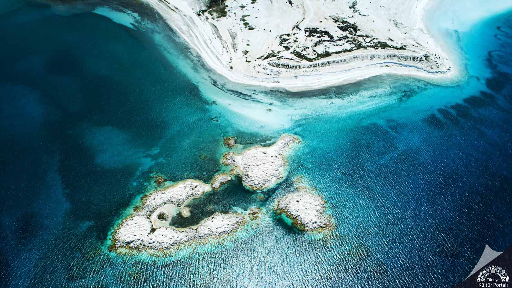
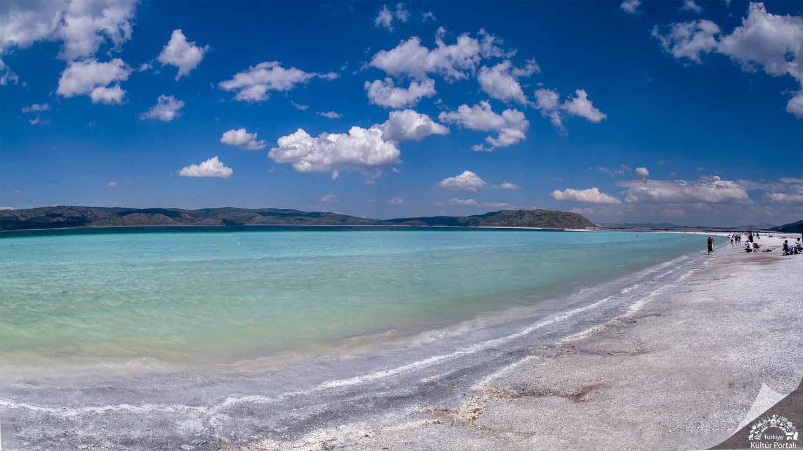
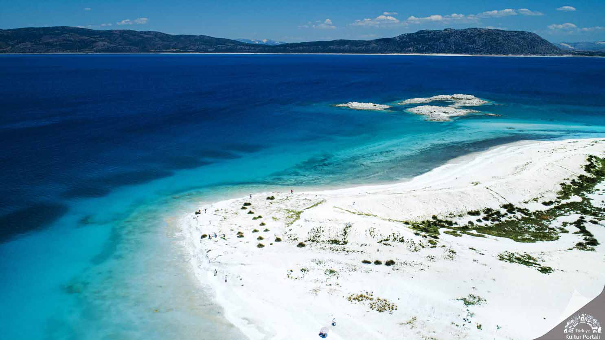
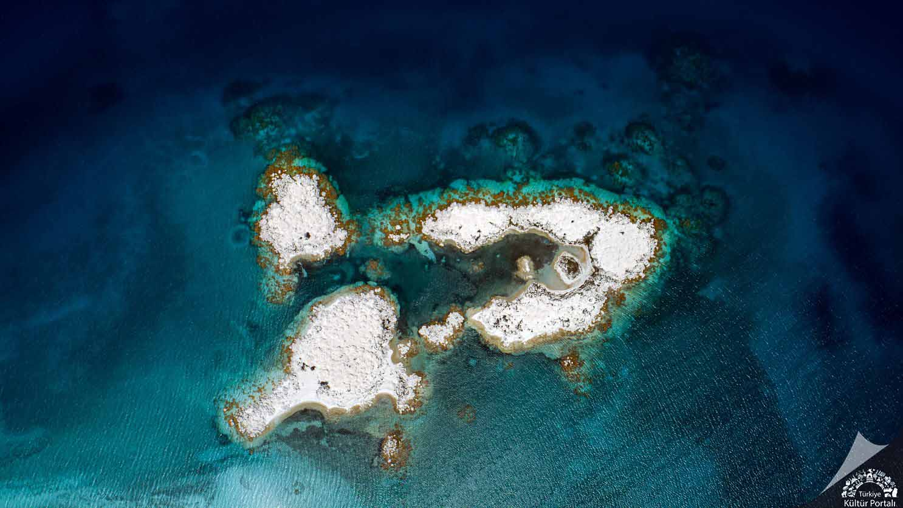
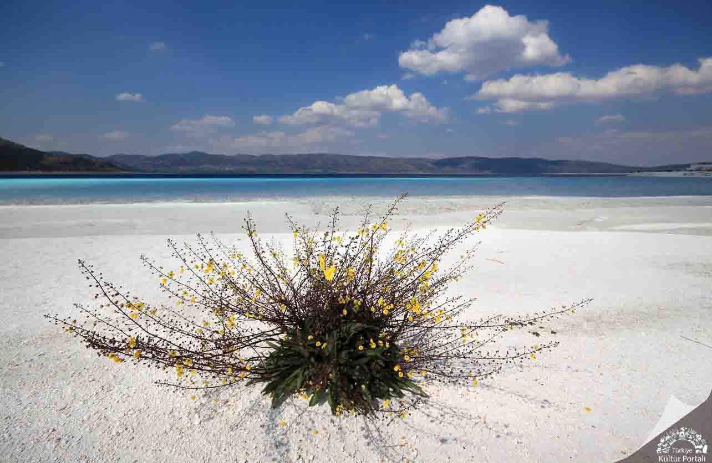

Salda Gölü
Salda Gölü, Burdur’un yaklaşık 64 km batısında Yeşilova ilçe sınırlarında yer alır. Türkiye’nin en derin, en temiz, en berrak özelliklere sahip göllerindendir.
Deniz seviyesinden yüksekliği 1140 metredir. Yüz ölçümü 44 kilometrekaredir. Göl, yaz ve kış aylarında turizm hareketliğinin yoğun olduğu Antalya-Denizli- Pamukkale tur güzergâhında bulunmaktadır. Ormanlık tepelerle ve ovalarla çevrili tektonik bir göldür. Derinliği bazı yerlerde 185 metredir. Güney cephesinde bulunan Sultan Pınar suyu burayı bir mesire yeri haline getirmiştir.Salda Gölü, kumsalı, turkuaz rengiyle oluşan güzel manzarası, temiz doğası, ormanları ve kamp yerleriyle alternatif tatil imkânları sunan, doğanın en cömert olduğu alanlardandır. Birçok kuş türüne ev sahipliği yapmaktadır. Salda Gölü yelken, kano, rüzgâr sörfü, foto-safari, göl turu, balık avcılığı, sualtı dalış, yüzme vb. imkânlar sunmaktadır.
Salda Gölü’nün Kumları Neden Beyaz?
Toros Dağları’nın arasında bulunan Salda Gölü magnezyum yönünden çok zengin olması nedeniyle kumsalı beyaz renge sahiptir.
Salda Gölü’nün Özellikleri
Salda Gölü’nü diğer göllerden ayıran en önemli özellik stromatolit (arkaik dönemde oluşmaya başlamış ve oluşumu hala devam ettiği düşünülen bakteriyel kökenli beyaz kayaçlar) oluşumlarına uygun jeobiyokimyasal bir ekolojik sürece sahip olmasıdır. Bu süreç sonunda tabanda beyaz renkli hidromanyezit içerikli stromatolitler oluşmuştur. İklim, jeolojik yapılar ve bakteri ile siyanobakteri etkileşimi sonucu oluşan bu çökellerin, ilk kez 3,5 milyar yıl önce yeryüzünde oluşmaya başladıkları çeşitli kaynaklarda belirtilmektedir. Bir anlamda bu oluşumların en eski fosil niteliğinde oldukları kabul edilmektedir. Günümüzde bu fosillerin güncel örnekleri olan modern stromatolit oluşumları Salda Gölü’nde gözlenmektedir. Birçok araştırıcı tarafından, öncül yaşam biçimlerine ve ilkel yaşam koşullarına dair önemli veriler içerdiği düşünülen stromatolitlerin oluşum mekanizmaları ile bu süreçleri kontrol eden jeobiyokimyasal faktörlerin anlaşılmasının Dünya’da yaşamın başlangıcı konusunda önemli bilgiler vereceği düşünülmektedir. Diğer yandan yine birçok otorite, Salda Gölü’nde yürütülecek araştırmalardan Dünya dışındaki yaşam hakkında da önemli sonuçlar beklemektedir. Salda Gölü’nde güncel olarak oluşan hidromanyezit içerikli stromatolitler ile Mars’taki karbonat içerikli kayaçlar arasındaki benzerliklerin NASA’nın da dikkatini çektiği, güncel yayın organlarında yer almaktadır.
Salda Gölü ve Biyolojik Çeşitlilik
Salda Gölü ve çevresinde sulak alan, dere, kumul, ibreli (iğne yapraklı) orman, ağaçlık, dağ bozkırı, kayalık, tarım gibi habitatlar mevcuttur. Salda Gölü’nün çevresindeki ibreli orman habitatları doğu bölümü hariç gölün tüm çevresinde olup kızılçam, karaçam, boylu ardıçlar, saf ve karışık ormanlar ile yer yer seyrek ormanlardan oluşmaktadır.Salda Gölü Havzası’nda 81 familyaya ait 301 sucul ve karasal bitki türü olduğu belirlenmiştir. Ayrıca sonbahar ve kış dönemlerinde su kuşları için önemli bir duraklama ve yaşam alanı vazifesi gören Salda Gölü, 38 farklı su kuşuna ev sahipliği yapmaktadır.
